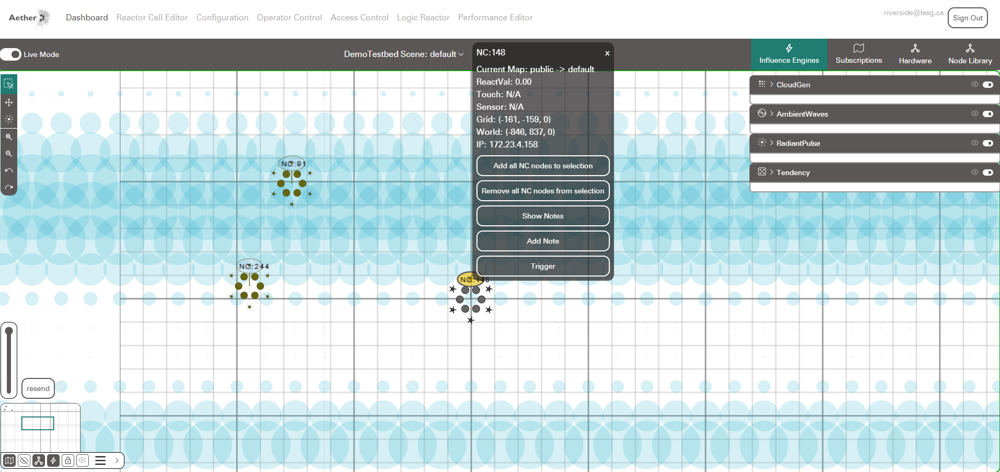

Node Controller Setup¶
To start using Aether, you will need a running Aether Server as well as some Aether Node Controllers
Note
If you are interacting with Aether as part of a workshop or established Testbed, an Aether Server and Node Controllers may already be configured for you, in these cases you can skip ahead to the Getting Started section of the documentation.
Creating a Node Controller¶
The distributed devices interact with Aether are called Node Controllers. A Node Controller can be created using the LASG's custom Node Controller boards, or by compiling firmware to an off the shelf ESP32 Microcontroller, such as an Adafruit Huzzah or Seeed Studio XIAO board.
Configuration¶
Before compiling a Node Controller's firmware, we need to setup its configuration file, so that the new Node Controller will have the necessary information to connect to a Wifi Network, and the Aether Server.
These configuration settings are defined in the aether_config.h file, found in the firmware folder of the testbed-v4 repository.
If you have just cloned the repository from github, you may not have an aether_config.h file, you can create one by copying the aether_config_template.h file.
For a standalone Aether Server the aether_config.h file should contain the following:
#define USE_TELNET
#define WIFI_SSID_ROUTER "Aether-Local"
#define WIFI_PWD_ROUTER [PASSWORD]
#define WIFI_PREFERRED WIFI_SSID_ROUTER
#define IP_1(X) 172 // The First Octet of the IP Address
#define IP_2(X) 23 // The Second Octet of the IP Address
#define IP_3(X) 4 // The Third Octet of the IP Address
#define SERVER_IP(X) "172.23.4.1"
#define MQTT_ADDR_LOCAL(X) "172.23.4.1"
[PASSWORD] is the password setup / provided for the Raspberry Pi's Wifi Access Point.
First Time Firmware Compilation¶
Note
Compiling Firmware for a Node Controller Requires Zig and PlatformIO to be installed. For Instructions on installing Zig and PlatformIO for a standalone server see Setting up the Build System
To compile firmware directly to a supported device.
- Connect the device to the computer / Raspberry Pi running Aether using a micro usb cable.
- Open a terminal in the
firmwarefolder of Aetherstestbed-v4repository. - run
pio run -e [DEVICE ID] --target upload
where [DEVICE ID] is replaced by the following identifier depending on the connected device
| Microcontroller | [DEVICE ID] |
|---|---|
| Adafruit Huzzah Feather S1 | featheresp32 |
| LASG Node Controller Version 1.7 | adafruit_feather_esp32s3 |
| Seeed Studio Xiao Esp32s3 | seeed_xiao_esp32s3 |
This will compile the firmware and upload it to the device.
After restarting, a node controller should connect to the Aether-Local Wifi network, and the Aether Server, and become visible on the Dashboard
Troubleshooting Devices:¶
Right clicking on a device in the dashboard will show you its IP address.

With Its IP address you can connect to the device from a command prompt or terminal via telnet:
telnet [DEVICE IP]
This will give you a print out of the devices debug outputs. There are 3 levels of debug information that can be cycled through by entering "d" into the telnet terminal.